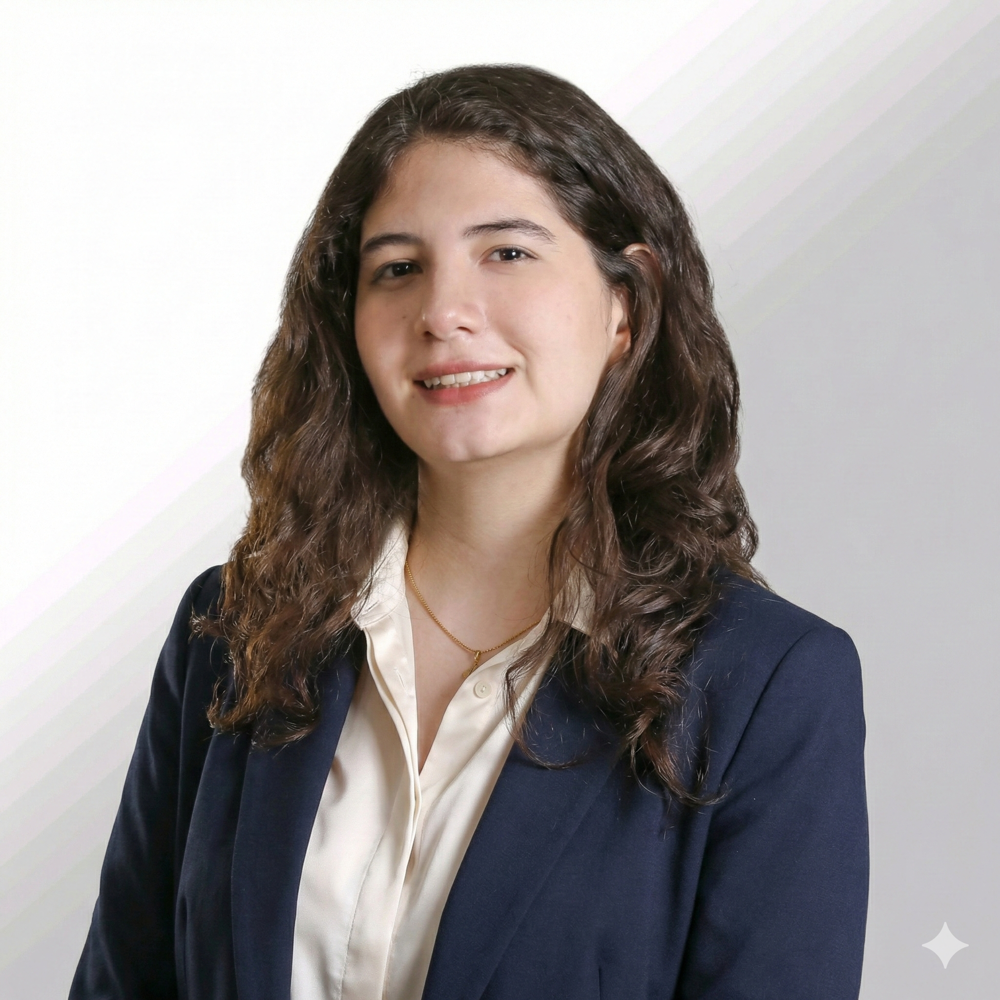

Sobre Mí

Perfil Profesional
Estudiante de quinto semestre de Ingeniería de Software en la Universidad Católica Boliviana con una beca por excelencia académica. Como AWS Cloud Club Captain, me apasiona liderar comunidades tecnológicas y construir puentes entre la academia y la industria cloud.
Mi enfoque combina el desarrollo Full Stack con la arquitectura de hardware e inteligencia artificial, buscando siempre crear soluciones técnicas que impacten positivamente en el entorno social y profesional.
Educación
Bachillerato en humanidades
Colegio "Cristo Rey"Graduada con honores
Ingeniería de Software
Universidad Católica Boliviana "San Pablo"Estudiante de 5to semestre con Beca STEM (Santa Cruz).
AWS Cloud Club Captain
Amazon Web Services (AWS)Liderazgo de comunidad estudiantil, organización de eventos técnicos y gestión de equipos core.